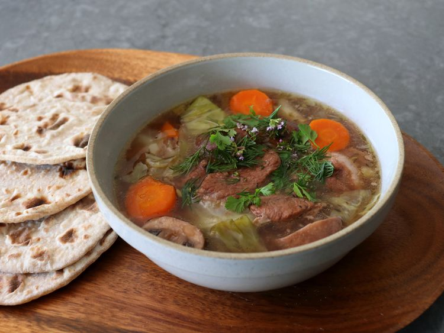

Credit: Allrecipes/ John Mitzewich
This Viking stew, made with meat, berries, mushrooms, plenty of fresh herbs, and root vegetables typically available to the Vikings, is a seemingly primitive dish with a remarkably sophisticated flavor.
It works with any meat, so if you cannot hunt for wild boar, do not be dismayed—you can still make it!
Add pork to a large soup pot or Dutch oven.
Add salt, honey, berries, lingonberry jam, and cold water, and turn the heat to high.
While stew is coming to a boil, add garlic, dry thyme, and ground coriander.
When mixture comes to a rolling boil, reduce heat to low, and simmer gently for 45 minutes, stirring occasionally.
Stir in onion, leeks, and mushrooms, and simmer until meat is almost, but not quite fork tender, about 45 minutes more.
Stir in cabbage, carrots, and fennel; continue to simmer until vegetables and meat are very tender, about 30 minutes.
Season to taste with salt.
Serve with fresh herbs scattered over the top.